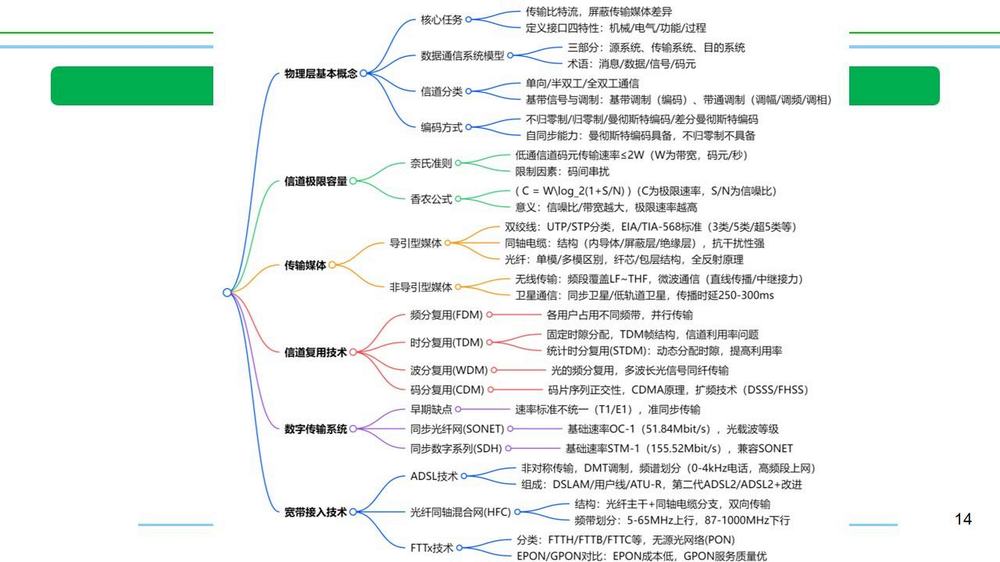
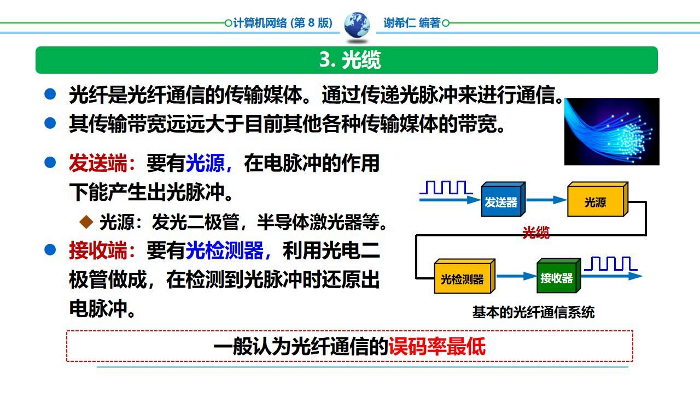
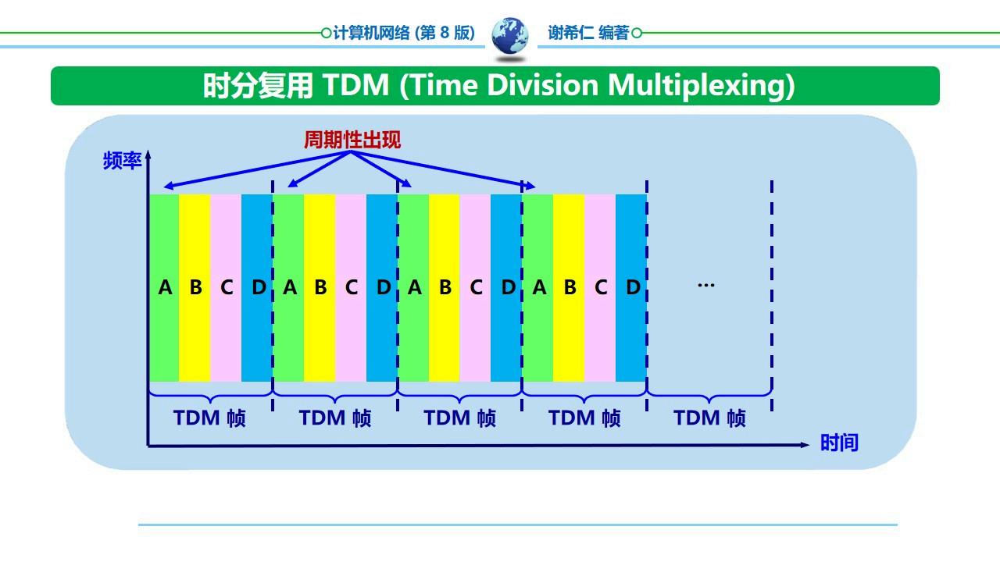
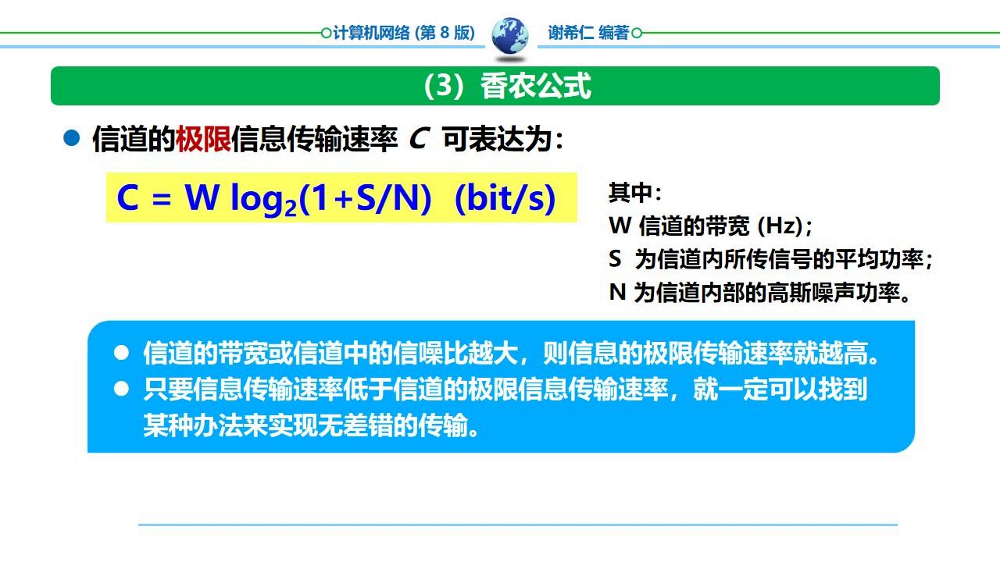
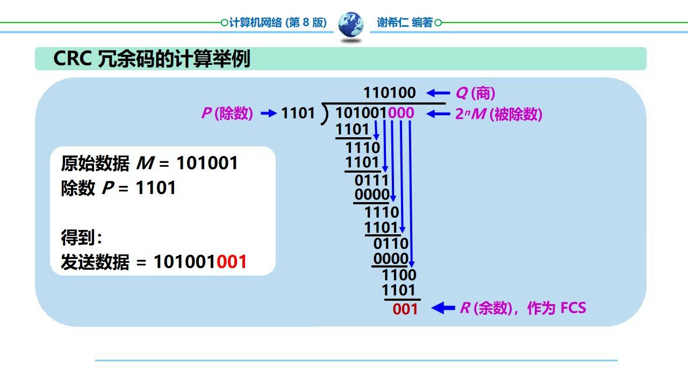

计算机网络——把许多计算机连接在一起，实现资源共享和数据通信的系统。计算机网络由若干结点（计算机、集线器、交换机、路由器等）和连接这些结点的链路组成。

是什么？
核心关系：互联网是互连网的特例——互联网采用 TCP/IP 协议族，而互连网不限定协议。
易错：考试常出判断题——「互连网和互联网是同一概念的不同译名」，这是错误的。internet 是通用名词，Internet 是专有名词。另一个常见陷阱：说「互联网的前身是 ARPANET」是对的，说「互连网的前身是 ARPANET」是错的。
是什么？互联网按工作方式可划分为：
为什么这样划分？复杂系统的设计遵循「端到端」原则——把复杂功能放在边缘（主机），把简单的数据转发功能放在核心（路由器）。这样核心部分可以做得极简单高效，而应用的复杂性由边缘主机承担。
| 客户—服务器方式（C/S） | 对等方式（P2P） | |
|---|---|---|
| 角色 | 客户是服务请求方，服务器是服务提供方 | 每个主机既是客户又是服务器 |
| 通信关系 | 客户主动发起，服务器被动等待 | 对等实体之间直接通信 |
| 典型应用 | Web浏览、电子邮件、FTP | BitTorrent、区块链 |
| 可扩展性 | 受服务器性能限制 | 规模越大性能越好（自扩展性） |
易错：「计算机通信」实际上是指进程之间的通信——主机 A 的某个进程和主机 B 上的另一个进程进行通信。不是说两台计算机本身在通信。
按作用范围划分：
| 类型 | 覆盖范围 | 典型应用 |
|---|---|---|
| 广域网 WAN | 几十~几千公里 | 互联网骨干网 |
| 城域网 MAN | 5~50公里 | 城市宽带 |
| 局域网 LAN | 约1公里以内 | 校园网、企业网 |
| 个人区域网 PAN | 约10米 | 蓝牙设备互连 |
| 指标 | 定义 | 公式/说明 |
|---|---|---|
| 速率 | 数据的传送速率（数据率/比特率） | 单位：bit/s (bps), kbps, Mbps, Gbps |
| 带宽 | 某信道允许通过的频带宽度 / 最高数据率 | 单位：Hz（模拟）/ bps（数字） |
| 吞吐量 | 单位时间内通过某个网络的实际数据量 | 受带宽或额定速率的限制 |
| 时延 | 数据从一端传送到另一端所需时间 | 见下方详细分解 |
| 时延带宽积 | 传播时延 × 带宽 | 管道中容纳的比特数 |
| 往返时间 RTT | 数据双向交互一次所需时间 | = 2 × 传播时延 + 处理时间 |
| 利用率 | 信道有数据通过的时间比例 | 信道利用率并非越高越好——过高则时延急剧增大 |

总时延 = 发送时延 + 传播时延 + 处理时延 + 排队时延
| 类型 | 公式 | 决定因素 |
|---|---|---|
| 发送时延 | $D_{send} = \\frac{\\text{数据帧长度（bit）}}{\\text{发送速率（bit/s）}}$ | 发送速率和帧长 |
| 传播时延 | $D_{prop} = \\frac{\\text{信道长度（m）}}{\\text{电磁波传播速率（m/s）}}$ | 距离和介质（光纤约 $2.0 \\times 10^8$ m/s） |
| 处理时延 | 路由器处理分组的时间 | 路由器性能 |
| 排队时延 | 分组在路由器队列中等待的时间 | 网络拥塞程度 |
易错：发送时延和传播时延是完全不同的概念。发送时延取决于「发出数据」的速度（和帧长/速率有关），传播时延取决于「数据在介质中跑」的速度（和距离有关）。例如：发送 1MB 文件在 1Mbps 链路上发送时延约 8.4s，但在光纤中传播 1000km 的传播时延仅约 5ms。
网络协议——为进行网络中的数据交换而建立的规则、标准或约定。协议的三要素：
| 维度 | 协议 | 服务 |
|---|---|---|
| 方向 | 是水平的 | 是垂直的 |
| 可见性 | 对上面的服务用户透明（看不见） | 上层使用服务原语获得下层所提供的服务 |
| 关系 | 协议的实现保证了能够向上一层提供服务 | 服务用户只能看见服务，无法看见下面的协议 |
通俗理解：协议是「同级之间怎么对话」的约定，服务是「下层给上层提供什么功能」的接口。
易错：「协议和服务在概念上是一样的」是错误判断题。两者概念不同——协议是水平的（同层通信），服务是垂直的（下层为上层提供）。

| OSI 七层 | TCP/IP 四层 | 五层协议（教学用） |
|---|---|---|
| 应用层 | 应用层 | 应用层 |
| 表示层 | 运输层 | |
| 会话层 | 网络层 | |
| 运输层 | 运输层 | |
| 网络层 | 网际层 IP | 数据链路层 |
| 数据链路层 | 网络接口层 | 物理层 |
| 物理层 |
记忆口诀：五层——物数网运应（物理层、数据链路层、网络层、运输层、应用层），自下而上逐层封装。

Everything over IP——IP 层可以支持多种运输层协议和应用层协议。
IP over Everything——IP 协议可以在多种类型的网络上运行。
设计理念：网络核心部分越简单越好——IP 层只提供无连接的、尽最大努力交付的数据报服务。复杂度放在端系统中。

易错：路由器在转发分组时最高只用到网际层，没有使用运输层和应用层。所以路由器只看 IP 首部做转发决策，不关心 TCP/UDP 和应用协议。
封装过程（自上而下）：
解封过程（自下而上）：接收端各层逐层剥去首部，最终将数据交付给应用进程。
三种交换方式对比：
| 方式 | 特点 | 优点 | 缺点 |
|---|---|---|---|
| 电路交换 | 建立连接 → 通信 → 释放连接，通信期间始终占用端到端资源 | 传输时延小，有序 | 信道利用率低，建立连接时间长 |
| 报文交换 | 整个报文存储转发 | 不需要建立连接 | 时延大，对缓存要求高 |
| 分组交换 | 报文分成短分组，逐段链路存储转发 | 高效、灵活、迅速、可靠 | 额外开销（首部）、可能失序 |
互联网采用：存储转发的分组交换技术、三层 ISP 结构。
易错：分组交换的时延比电路交换大（因为要排队等），但信道利用率远高于电路交换。选择题常考这个权衡。
互联网采用三层 ISP（Internet Service Provider）结构：